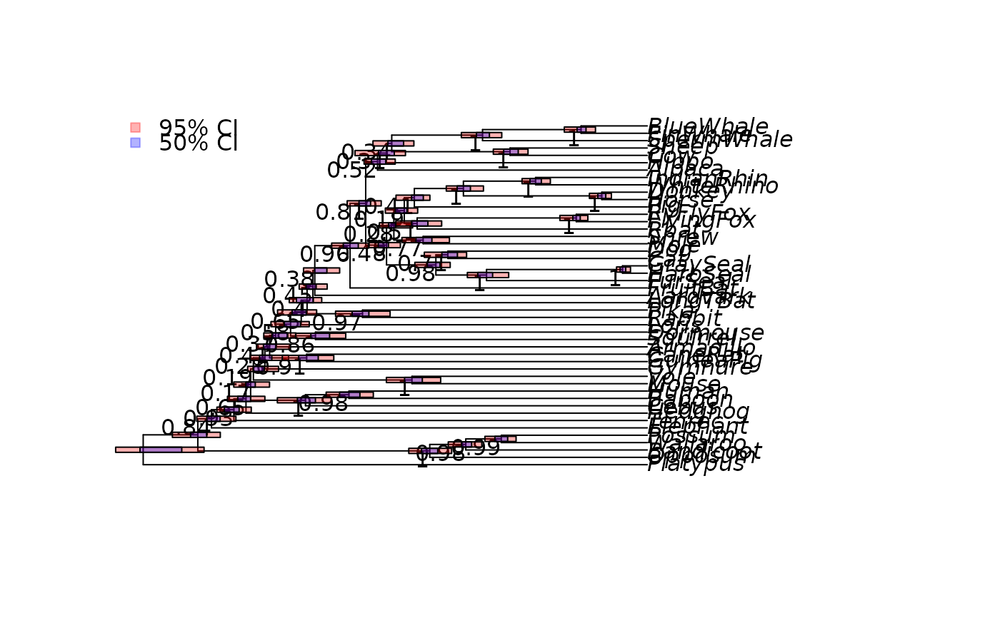
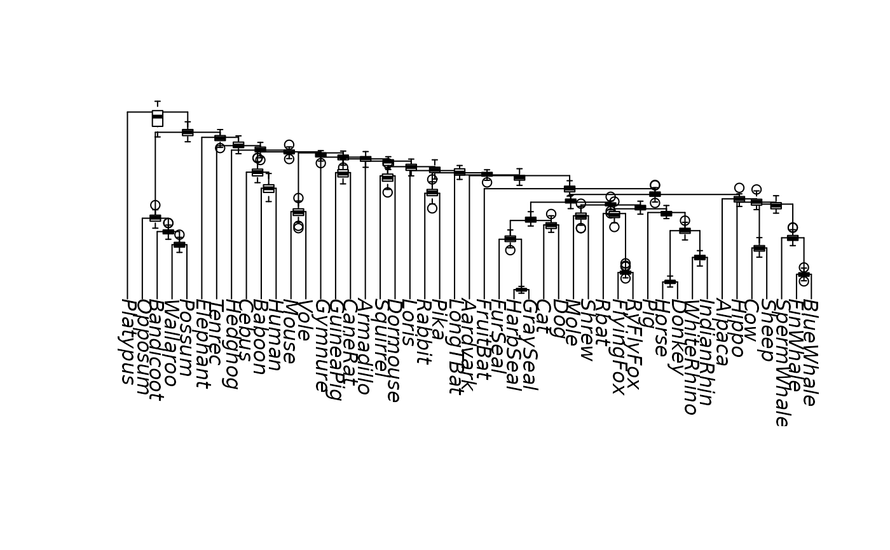

These are low-level plotting commands to draw the confidence intervals on the node of a tree as rectangles with coloured backgrounds or add boxplots to ultrametric or tipdated trees.
Usage
add_ci(tree, trees, col95 = "#FF00004D", col50 = "#0000FF4D",
height = 0.7, legend = TRUE, ...)
add_boxplot(tree, trees, ...)Arguments
Examples
data("Laurasiatherian")
dm <- dist.hamming(Laurasiatherian)
tree <- upgma(dm)
set.seed(123)
trees <- bootstrap.phyDat(Laurasiatherian,
FUN=function(x)upgma(dist.hamming(x)), bs=100)
tree <- plotBS(tree, trees, "phylogram")
add_ci(tree, trees)

plot(tree, direction="downwards")
add_boxplot(tree, trees, boxwex=.7)
